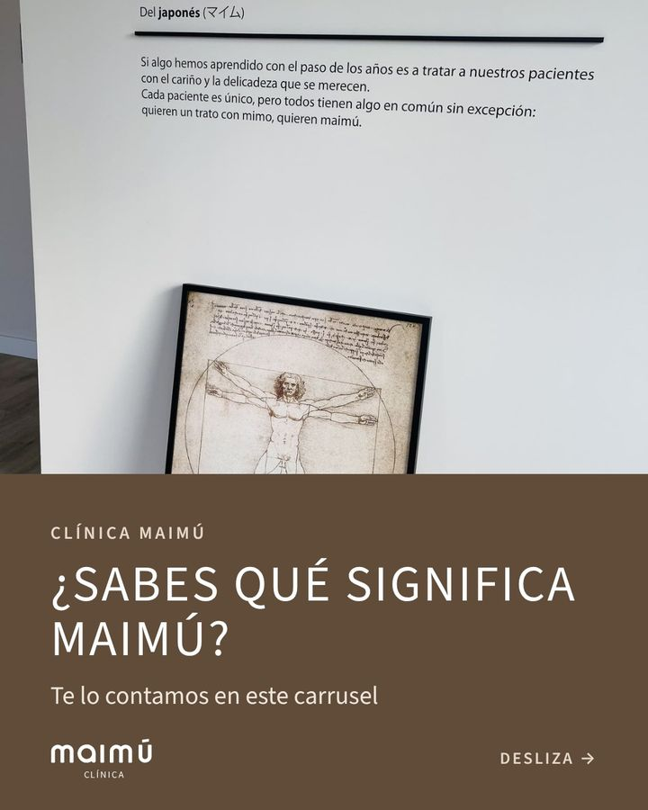
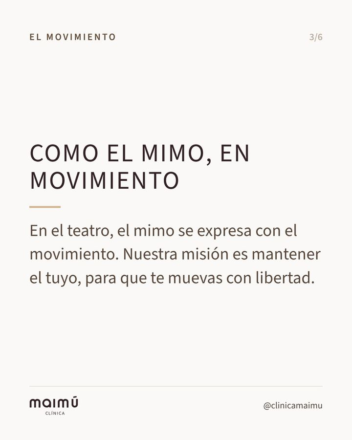
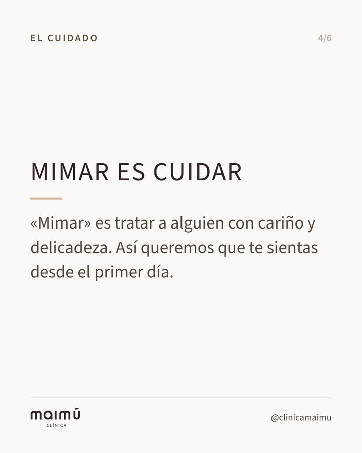
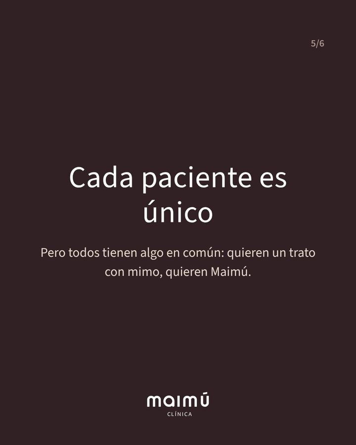

Carrusel · 6 imágenes, desliza →
Martes 1 de diciembre
Que nos conozcan por lo que nos hace distintos: el trato con mimo.





Ver el texto
¿Sabes qué significa Maimú? 🌿 Viene del japonés マイム y significa «mimo». En el teatro, el mimo se expresa con el movimiento, y nuestra misión es mantener el tuyo. Y «mimar» es tratar a alguien con cariño y delicadeza: así queremos que te sientas desde el primer día. Cada paciente es único, pero todos tienen algo en común: quieren un trato con mimo, quieren Maimú. 💛 📍 P.º de Estrasburgo 15, Salburua (Vitoria-Gasteiz) 💬 Pide tu cita por WhatsApp: enlace en el perfil
#clinicamaimu #fisioterapiavitoria #vitoriagasteiz #salburua